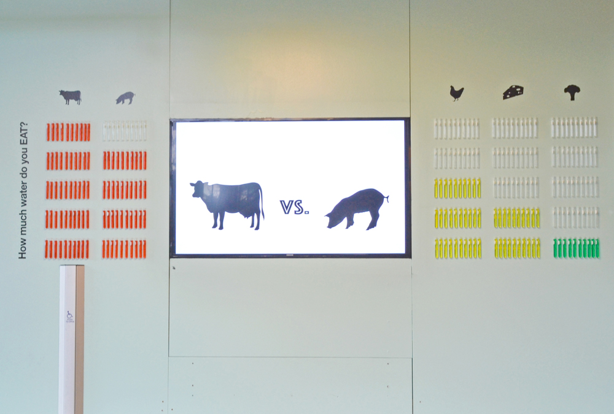

How much water do you Eat? - An Installation
The installation was aimed at creating an awareness about conserving water by making wise food choices about the kinds of food we eat.

The concept of virtual water i.e., the amount of water that goes into the processing of various food items, was introduced to people through the installation. Five predominant food items were chosenn namely: beef, chicken, cheese, pork and greens. Depending on the amount of water that went into the processing of each of these food items, water columns were constructed using test tubes. Each water column had varying levels of water dependin on the food item. For instance, beef had the tallest water column as it consumed 4000 gallons of water per pound for processing while greens had the shortest water column with 400 gallons of water per pound for processing. Also, the water columns were color coded. Red refers to a huge consumption of water for processing while yellow and green refer to medium and low levels of water consumption respectively.
Installation at Cruess Hall, UC Davis

Our team consisted of five designers. My specific role in the project was to design the animation that was projected on the LED screen.